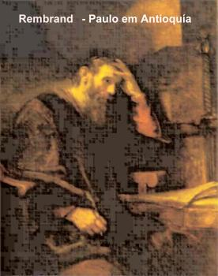
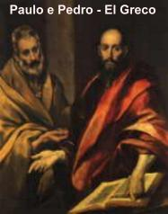
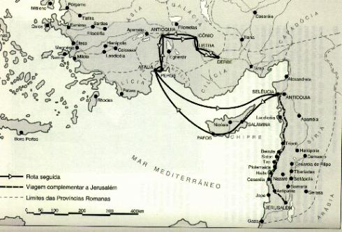
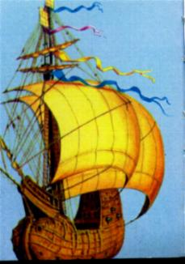

Paulo convertido, via o ambiente completamente deformado, sem o menor equilíbrio moral entre o homem e o mundo. Por isso, agora compreendia, que para enobrecer a vida, não bastava ser um homem culto e estudioso, cheio de saber, era necessário estar na presença de DEUS. Acolher a realidade Divina no coração, não externamente por palavras, mas estabelecendo profundas raízes, para que ela pudesse germinar e desabrochar maravilhosamente, apresentando lindos frutos de conversão, a imagem e a semelhança do CRIADOR. Ele entendeu, que acima da inteligência, que também é um dom de DEUS, há a graça Divina que tem todo poder! A verdadeira sabedoria reside no Amor a DEUS, no cultivo de uma profunda amizade ao SENHOR, como o melhor e mais seguro caminho para uma existência harmoniosa no presente e se alcançar a exuberância da vida eterna.
Por isso, mesmo na contingência de um exílio, alguma coisa precisava ser feita. Foi assim, que timidamente começou a ensinar a doutrina cristã, aos parentes, aos conhecidos e aquelas pessoas que curiosamente compareciam aos encontros que realizava nas proximidades do lar paterno.
Com o passar dos meses, o número de pessoas tornou-se apreciável, o que exigiu um local mais amplo para os encontros catequéticos.
Nesta época, Barnabé deslocou-se para Tarso a sua procura. A Igreja de Antioquiacrescia de maneira admirável e necessitava de homens que pudessem orientá-la de modo eficiente. Como Barnabé foi enviado a Tarso oficialmente pela Igreja de Jerusalém, era importante a adesão de Saulo, porque se tratava da vontade dos Apóstolos. Ele deixou um parente em seu lugar, dando continuidade a catequese e seguiu com Barnabé para Antioquia.
Lá o trabalho foi árduo, mas também repleto de êxito. DEUS derramava abundantemente a graça Divina, convertendo muita gente, inspirando os corações, fazendo com que as celebrações e os sacramentos fossem cultivados com interesse e fervor. Foi lá que pela primeira vez, os discípulos receberam o nome de “cristãos”. (At 11,26)
BARNABÉ E SAULO DELEGADOS EM MISSÃO A JERUSALÉM
Durante
o reinado do Imperador Cláudio aconteceu uma grande fome em diversas nações 
Este acontecimento serviu também para mostrar que as obras de Pedro e de Paulo caminhavam na mesma direção e se mantinham unidas no amor a DEUS, muito embora os campos de evangelização fossem diferentes. Pedro concentrou o seu trabalho na evangelização dos judeus e Paulo, era o Apóstolo dos gentios, isto é, dedicou-se a evangelização dos pagãos. Quando voltaram a Antioquia levaram o irmão João, também chamado Marcos.
PRIMEIRA VIAGEM APOSTÓLICA
Na
Igreja de Antioquia havia profetas e doutores, assim como uma notável presença de
fieis. 
Desceram até a Selêucia e dali navegaram para Chipre, terra natal de Barnabé. Depois seguiram para Salamina e puseram-se a anunciar a palavra de DEUS nas sinagogas dos judeus. Levavam como auxiliar, João (Marcos) que veio de Jerusalém.
Também foram a ilha de Pafos e lá encontraram um falso profeta que estava a serviço do procônsul Sérgio Paulo. Este sabendo da presença dos mensageiros cristãos na ilha, mandou chamá-los, porque desejava ouvir a palavra de DEUS. O falso profeta contudo, fazia oposição, procurando afastar o procônsul da fé. Saulo cheio do ESPÍRITO SANTO, percebendo a trama, disse: “Ó filho do diabo, cheio de falsidade e malícia, inimigo de toda justiça, não cessas de perverter os caminhos do SENHOR, que são retos? Eis que agora o SENHOR faz pesar sobre ti a Sua Mão. Ficarás cego, e por algum tempo não verás mais a luz do sol.” (At 13,10-11) E naquele mesmo instante o falso profeta não enxergou mais nada, rodava como um tonto, procurando alguém que lhe desse a mão. Vendo o que aconteceu, o procônsul ficou impressionado com a força da doutrina e abraçou a fé cristã.
De
Pafos, o Apóstolo e seus companheiros alcançaram Perge, na Panfília e
posteriormente chegaram a Antioquia da Pisídia. Pregavam a palavra de DEUS
nas Sinagogas dos judeus e nas Praças públicas, sendo sempre acolhidos por muitas
pessoas. Em cada cidade fundavam um núcleo cristão, onde celebravam a Santa
Missa e faziam reuniões. Quando partiam para dar continuidade à missão,
deixavam fieis devidamente preparados encarregados de continuarem 
Depois evangelizaram Icônio, Licaônia, Listra, Derbe. Em todos os lugares existiam pessoas que acolhiam os ensinamentos cristãos e aqueles que não aceitavam a doutrina de Paulo e tentavam convencer a multidão de que a pregação dos Apóstolos era falsa. Foram apedrejados diversas vezes, encarcerados e expulsos de muitas localidades, mas a palavra de DEUS ficava no coração de muita gente.
Em Derbe finalizaram esta primeira missão e então, voltaram a Listra, Icônio, Pisídia, Perge, Atália e finalmente chegaram em Antioquia.
Tarso, era a capital da região da Cilícia, onde Paulo nasceu e atualmente está situada próximo a Adana, cidade importante na Turquia. Naquela época, o Império Romano ocupava toda aquela região e se estendia por onde hoje é o território da Turquia, Síria e Israel. De Tarso existem somente ruínas: algumas casas quase totalmente destruídas, as três muralhas que envolviam a cidade, separadas por uma distância aproximada de 12 metros, com portões que permitiam a comunicação; a Ponte Justiniano; as Termas de Alexandre e também ruínas de diversos túmulos rupestres romanos. Subindo em direção a Ankara, capital da atual Turquia, alcançamos Kayseri e o Vale Goreme, na região da Capadócia, onde se encontram notáveis formações rochosas de origem vulcânica. As lavas provenientes de erupções ocorridas há milhares de anos foram lentamente trabalhadas pelo vento (eólicas) e pelas águas, adquirindo a conformação que apresentam. Naquelas admiráveis obras da natureza, os primeiros cristãos construíam as suas casas e também as suas Igrejas, para ficarem protegidos contra todas as perseguições dos inimigos, principalmente dos romanos, árabes e judeus. São chamadas Igrejas Rupestres, porque foram construídas no interior da rocha. Existe também uma notável e extensa cidade subterrânea, cavada abaixo do solo. Por isso mesmo, aquele Vale que no século VI, chegou a possuir mais de 400 Igrejas, era chamado Vale Goreme. A palavra "Goreme " traduzida para o português significa "tu não podes ver" significando que ninguém conseguia ver as Igrejas e os cristãos. Paulo de Tarso visitou e evangelizou aquela região.